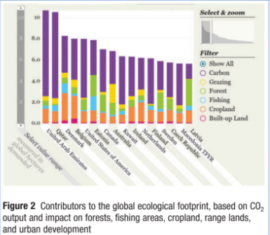

Biology Journal
Abstract
Every two years, the Worldwide Fund for Nature (WWF) and its partner organizations, The Zoological Society of London and the Global Footprint Network, publish the E- Living Planet Report.
This report describes the changing state of biodiversity and explains how the human consumption of natural resources affects our biosphere.
It is a major scientific undertaking, monitoring changes in 7953 populations of 2544 species. The most recent report confirms that we are experiencing an ecological deficit.
Abstract
Canada’s ecological footprint is ranked as the seventh largest per capita among the 130 nations studied.
Governments, industry, and individuals in Canada and around the world need to work aggressively to reduce their ecological footprint.
Failure to do so could result in permanent loss of biodiversity and erode Earth’s ability to support life adequately.

For many years, we have known that air and water pollution, habitat loss, and greenhouse gas emissions are a concern, but how do we actually measure the impact of these activities on a global scale?
The scientists who compiled The Living Planet Report have attempted to do just that. In cooperation with the scientific community, the report explores the issues and problems that we face today and
considers the potential solutions.
The key finding of the 2010 report is clear: the demands of humans exceed the capacity of the planet. We want and use more than we can have.
Method
Scientists used two indicators to measure the health of the planet: the Living Planet Index (LPI) and the Global Footprint.
The LPI measures changes in the health of Earth’s ecosystems by tracking the trends of 7953 populations of 2544 vertebrate species.
The LPI for the 2010 report was calculated using species population data from scientific journals and literature that covered the period from 1970 to 2007.
Annual data points were interpolated using a mathematical model to calculate the average rate of change each year across all species. The average annual rates of change over all the years were put together to create the index, with the year 1970 set as year one.
The ecological footprint is a scorecard that looks at human consumption of the following resources: grazing land, forest, fishing grounds, cropland, and built-up land.
It also looks at our CO2 emissions, based on the area of trees required to absorb the amount of CO2 we create.
As well, it calculates our water footprint, which is the volume of freshwater used by people.
We use water for drinking, washing, bathing, and producing food and goods. Less than 1 % of the world’s freshwater is available to us for consumption, and this amount is dwindling, especially as climate change causes glaciers to shrink and weather patterns to change.
Footprint calculations are very complex, taking into account the land and water that are needed to support human life, in hectares per person, and analyzing the production and consumption of each country per year.
Linking the global footprint to our biocapacity gives us a clear indication of our impact on the planet.
Findings
The Living Planet Report shows that humans are consistently demanding more from the planet than it can provide.
The global LPI has been declining consistently since the 1970s, with a 30 % drop in the number of vertebrate species between 1970 and 2007.
The Living Planet Report also showed that the size of our ecological footprint has doubled since the 1960s.
In fact, in 2007, our footprint exceeded Earth’s capacity to renew resources by 50%.
The size of a country’s ecological footprint depends on its wealth and the size of its population, as well as the availability of its resources.
Canada’s ecological footprint ranked as the seventh largest per capita among the 130 nations studied.

Discussion
Our growing human population is perhaps the biggest concern that the report raises.
In 2010, the world population was just under 7 billion.
By 2050, according to estimates, there will be 9 billion people on the planet.
This change in population will further increase our demand for natural resources.
If we do not change how we use our natural resources, the WWF believes that we will need the equivalent of two Earths to meet our annual demands by 2030.
- manage our land and sea resources
- share our energy, food, and water in an equitable way with other countries that have less
- improve governance in industry, as well as politics
Investing in good stewardship of our natural resources will help us shift to a greener economy.
More sustainable agriculture, better management of land and aquatic resources, and the willingness to share these resources will help to create a healthy future for everyone.